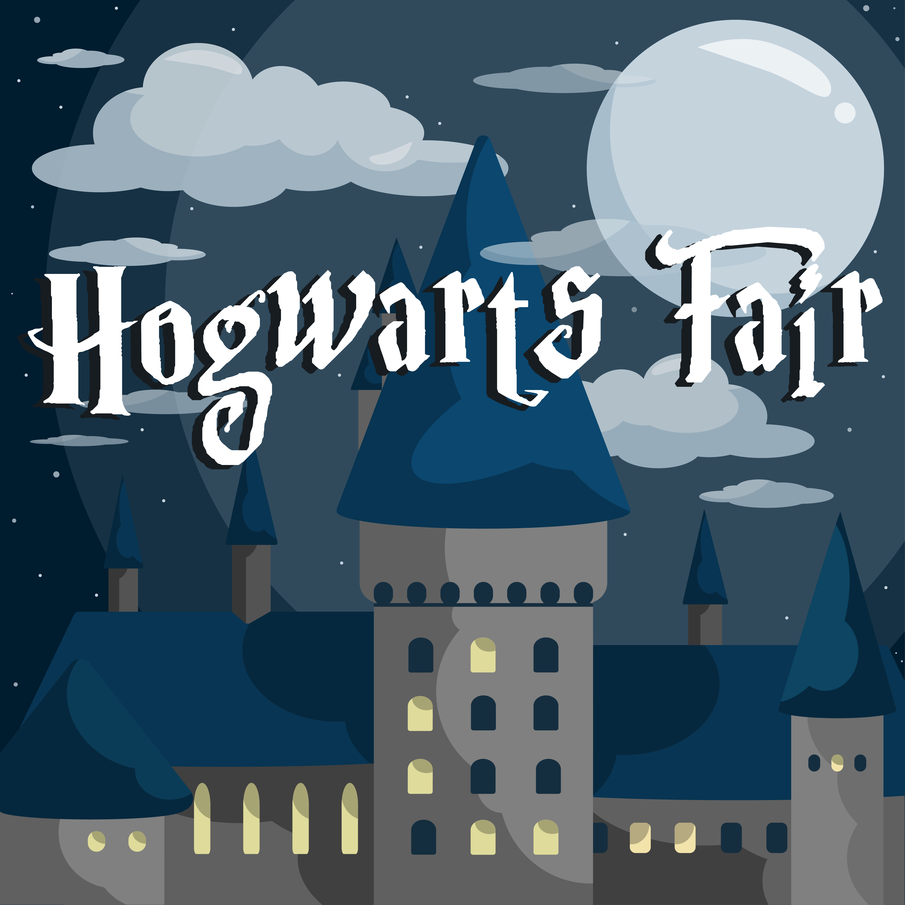

Bài đăng |
Hogwarts Fair – hội chợ khoa học mang âm hưởng phù thủy thần bí của bộ phim Harry Potter
Với sứ mệnh lan truyền tình yêu và niềm đam mê khoa học, hội chợ khoa học Hogwarts Fair tổ chức bởi Tổ chức Khoa học Ứng dụng ASO (trường THPT Chuyên Sư Phạm - Hà Nội)
hứa hẹn sẽ mang đến rất nhiều điều bất ngờ và lí thú.
Đặc biệt, không gian mang đậm âm hưởng phù thủy thần bí là điểm nhấn tạo sức thu hút khó cưỡng cho hội chợ.

Hogwarts Fair
Hogwarts Fair
Thời gian: 15h-18h, thứ Tư ngày 16 tháng 5 năm 2018
Địa điểm: Sân trường THPT Chuyên Sư Phạm, Đại học Sư Phạm Hà Nội (136 Xuân Thủy, Cầu Giấy, Hà Nội)
Link đăng kí tham gia: http://bit.do/hogwartsfair2018
Đối tượng tham gia: Không giới hạn
Hogwarts Fair là hội chợ khoa học được tổ chức bởi Tổ chức Khoa học Ứng dụng ASO dưới sự bảo trợ của trường THPT Chuyên Sư Phạm, lấy ý tưởng từ Học viện Ma thuật và Pháp thuật Hogwarts trong tác phẩm đình đám Harry Potter. Ngoài đơn vị tổ chức chính là ASO, trong hội chợ Hogwarts Fair cũng sẽ có sự đồng hành của Tổ chức khoa học SPOFY, dự án phi lợi nhuận Vietcode và CLB Vật lí ứng dụng – Thiên văn trường THPT chuyên Khoa học tự nhiên HAPAC.
Đến với Hogwarts Fair, người tham gia không chỉ được chiêm ngưỡng những thí nghiệm nhiệm màu, những sản phẩm độc đáo mà còn được hóa thân trở thành một phù thủy Hogwarts, tự tay tạo nên phép thuật nhờ khoa học. Không gian trải nghiệm có “1-0-2” này chắc chắn sẽ không làm bạn thất vọng.
Ngoài bàn Check-in - nơi phát vé và cung cấp thông tin, hội chợ có 4 quầy chính được chuẩn bị công phu và đầy thú vị:
Quầy Lí - Quidditch: Có thể bạn chưa biết, môn thể thao đầy mạo hiểm Quidditch trong Harry Potter cần có trí thông minh để tham gia. Bạn cần biết khi cưỡi trên chổi thần phải căn hướng như nào để có thể bắt trái banh Snitch, cần biết hướng đối thủ sẽ bay qua,… Quầy Vật Lí ở HF cũng vậy, tại đây, bạn hoàn toàn có thể thỏa mãn đam mê rèn luyện trí não đồng thời chiêm ngưỡng những thí nghiệm và sản phẩm Vật Lí vô cùng đặc sắc.
Quầy Tin – Charm: Charm chính là môn Bùa chú. Nếu đối với môn Tin học, học sinh sẽ phải biết những tổ hợp phím và những code đầy rắc rối thì ở môn Charm, các phù thủy sẽ phải học thuộc những mật mã bùa chú phức tạp. Quầy Tin hứa hẹn sẽ là điểm đến thú vị cho các bạn ham mê lập trình và có niềm yêu thích đặc biệt với môn Tin học đó!
Quầy Hóa và Sinh – Potions và Herbology: Nếu trong Harry Potter, Potions là môn Độc Dược thì Herbology là môn Thảo dược học. Có lẽ, tác giả J.K.Rowling đã “đo ny đóng giày” hai bộ môn này cho Hóa và Sinh nên chúng mới có những điểm chung đến bất ngờ như thế. Đến với quầy Hóa - Sinh, bạn sẽ được thực hiện những thí nghiệm vô cùng thú vị cũng như chiêm ngưỡng các tiêu bản động vật kì công.
Quầy đồ ăn – The Great Hall: Chắc các bạn còn nhớ đại sảnh nơi mà các phù thủy tụ tập gặp gỡ và thưởng thức hàng ngàn những món ngon ở trường Hogwarts phải không? Cũng như vậy, quầy đồ ăn sẽ là điểm nghỉ chân và ăn uống tiếp sức để các bạn có thể tham gia những hoạt động đầy thú vị của Hogwarts Fair. Đặc biệt, đồ ăn sẽ hoàn toàn miễn phí cho các “phù thủy” đến tham dự hội chợ.
Thật thú vị và hấp dẫn phải không các bạn! Ban tổ chức luôn mong đợi được gặp và cùng các bạn trải nghiệm những điều lí thú trong hội chợ sắp tới. Vậy, còn chần chừ gì nữa mà không điền form ngay thôi nhỉ?
-----------------------------------------------------------
[F] Fanpage chính thức: facebook.com/aso.csp
[E] Email: aso.hnue@gmail.com
[H] Hotline: 0967183494
[A] Ask: http://ask.fm/asohnue